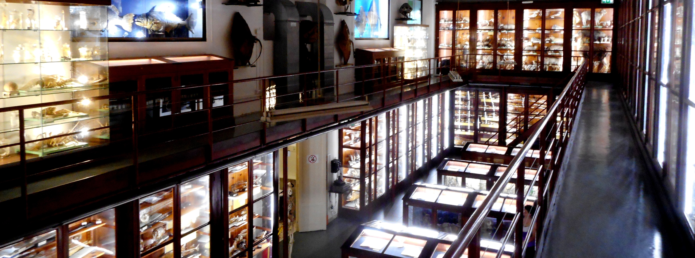
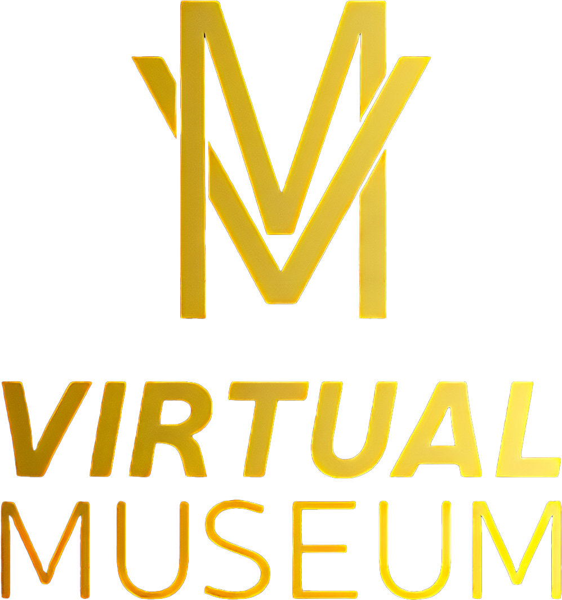

Museo dei motori
Il Museo Storico dei Motori e dei Meccanismi dell'Università di Palermo ospita una vasta collezione di motori, meccanismi e apparecchiature scientifiche, tra cui motori a vapore del XIX secolo, motori automobilistici e aeronautici, e il raro velivolo Fiat G.59 4B. Primo in Italia a ricevere il Mechanical Engineering Heritage Collection dalla ASME, il museo promuove la valorizzazione del suo patrimonio attraverso ricerca, divulgazione, mostre, seminari, workshop e attività didattiche.
Museo di mineralogia
Il Museo di Mineralogia di Palermo è situato al secondo piano della struttura del vecchio istituto di mineralogia, facente oggi parte del dipartimento di scienze della terra e del mare. È gestito dall'associazione Geode, grazie alla convenzione stipulata con l'Università degli studi di Palermo, dal 2010. La collezione del museo comprende migliaia di campioni di minerali provenienti da tutto il mondo, insieme a fossili e rocce magmatiche, sedimentarie e metamorfiche. Il museo offre percorsi guidati da esperti e laboratori per le scolaresche, permettendo di apprezzare lo studio delle scienze della Terra.

Collezione dei dispositivi storici d'informatica
Il Museo dei Dispositivi Storici di Informatica dell'Università di Palermo offre un viaggio affascinante nell'evoluzione della tecnologia informatica. Inizia nella "Sala delle Origini" con strumenti di calcolo antichi come abachi e macchine meccaniche, poi passa alla "Sala dei Mainframe" con imponenti mainframe che hanno rivoluzionato la gestione dei dati. Il percorso culmina nella "Sala dei Personal Computer", dove si esplorano i primi PC e laptop che hanno reso l'informatica accessibile a tutti, con schermi interattivi e dimostrazioni pratiche.

Museo Mec
Il MEC MUSEUM di Palermo, situato nel palazzo cinquecentesco Castrone Santa Ninfa, è il primo museo in Sicilia dedicato alla Rivoluzione Informatica. Creato dall'architetto Giuseppe Forello, il museo presenta una mostra su Steve Jobs, "Why Join the Navy If You Can Be a Pirate?", con otto aree tematiche che ripercorrono la sua vita e l'evoluzione dei suoi prodotti. Tra gli oggetti esposti ci sono il rarissimo Apple-I, il Lisa I, il NeXTcube e i Macintosh, celebrando l'impatto culturale delle innovazioni di Jobs.
Museo Doderlein
Il Museo di Zoologia "Pietro Doderlein" è il più importante museo zoologico siciliano, fondato nel 1863 dal professor Pietro Doderlein presso l'Università degli Studi di Palermo. La collezione comprende oltre 5000 esemplari di Invertebrati e Vertebrati, esposti rigorosamente per ordine filogenetico. Tra i reperti più significativi ci sono: la collezione ittiologica, con circa 1100 esemplari di pesci del Mediterraneo preparati a secco o in liquido, una delle più complete in Italia, la collezione erpetologica, con circa 1000 esemplari e la collezione ornitologica, con oltre 1700 esemplari. Numerose specie endemiche rare o protette, come la Coturnice di Sicilia, l'Aquila reale, la Tartaruga marina
Planetario
Il planetario è una sala a cupola con un grande schermo che simula il cielo notturno, offrendo un'esperienza immersiva nell'astronomia. Le proiezioni, accompagnate da narrazioni educative, permettono agli spettatori di osservare stelle, pianeti e costellazioni in modo realistico. Utilizzato per l'insegnamento e la divulgazione scientifica, il planetario offre anche esposizioni interattive e attività educative. È un luogo che rende l'astronomia accessibile e affascinante per tutte le età.
Museo della fotografia
Il Museo della Fotografia di Palermo, situato nel Villino Favaloro, è un museo regionale dedicato alla digitalizzazione e valorizzazione del patrimonio storico fotografico siciliano, offrendo un percorso multimediale e interattivo che racconta la storia della fotografia a partire dal 1923. La struttura espone oltre 100 apparecchiature fotografiche d'epoca e rappresenterà un importante polo culturale per la promozione del patrimonio fotografico della regione. Il museo sarà accessibile ai cittadini di Palermo e ai turisti, offrendo un'esperienza coinvolgente e educativa nel mondo della fotografia.

Museo Gemellaro
Il Museo Geologico e Paleontologico "Gaetano Giorgio Gemmellaro" è un importante istituto scientifico di Palermo, appartenente al Sistema Museale d'Ateneo dell'Università degli Studi di Palermo. Fondato nel 1861 da Gaetano Giorgio Gemmellaro, il museo è dedicato alla paleontologia e geologia, offrendo una vasta collezione di reperti che illustrano la storia geologica della Sicilia. Il museo è stato fondato da Gaetano Giorgio Gemmellaro, il primo professore di geologia e mineralogia all'Università di Palermo. Dopo un periodo di chiusura dovuto a danni causati da terremoti e bombardamenti, il museo è stato riaperto nel 1978 e ha continuato a espandersi e rinnovarsi. Attualmente è gestito dal Sistema Museale d'Ateneo dell'Università degli Studi di Palermo
Museo della fotografia
Il Museo della Fotografia di Palermo, situato nel Villino Favaloro, è un museo regionale dedicato alla digitalizzazione e valorizzazione del patrimonio storico fotografico siciliano, offrendo un percorso multimediale e interattivo che racconta la storia della fotografia a partire dal 1923. La struttura espone oltre 100 apparecchiature fotografiche d'epoca e rappresenterà un importante polo culturale per la promozione del patrimonio fotografico della regione. Il museo sarà accessibile ai cittadini di Palermo e ai turisti, offrendo un'esperienza coinvolgente e educativa nel mondo della fotografia.
Orto Botanico
L'Orto Botanico, istituito nel 1781, è un'importante istituzione europea per valore storico e scientifico, con circa diecimila specie di piante. Progettato in stile neogreco dall'architetto Leon Dufourny, include edifici come il Gimnasium, la Biblioteca e gli Erbari. Tra le sue attrazioni vi sono l'Aquarium, boschetti esotici, e la Serra Maria Carolina. Dal 2020 ospita la statua del Genio di Palermo di Domenico Pellegrino.
Scienziate Contemporanee
Le donne scienziate sono fondamentali per il progresso della scienza e della tecnologia. Nonostante discriminazioni e ostacoli storici, hanno dato contributi essenziali in molti campi. La loro importanza non risiede solo nei risultati scientifici, ma anche nel loro ruolo di modelli e pionieri. I loro successi sfidano gli stereotipi di genere e ispirano le nuove generazioni di ragazze a intraprendere carriere nelle STEM